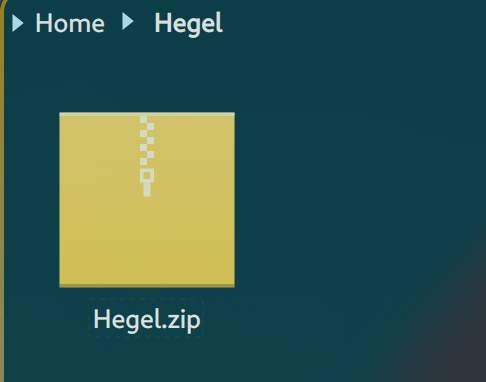

Compressing Hegel
Epistemology and Compression
Nov 12, 2021
I don’t have any cute hook or provocative sentences to start this with and I didn’t want to begin with a definition like a high school freshman so I’ll just be upfront with you: This is a boring dry philosophic (gags) essay about my theory of intelligence and how I believe it to be equivalent to compression. I realize philosophers have been arguing about this since Socrates first learned to shit and I’m just some asshole with a shitty Twitter feed but it is something I believe to be true despite most likely being incorrect and overgeneralizing about the subject. “you should be more confident Wittgenfine no one wants to read a ten-page essay by someone who isn’t sure about the subject they are reading about!” This is probably true cliche fake interjecting voice written by the author of this post who is still posting this despite thinking the audience will think this but no, I shouldn’t be confident but despite that I still arrogantly think I am right and hopefully someone more intelligent then me can gain something from this post. (sorry been busy with school shit so you get this old shitty essay I wrote)
So what exactly is intelligence and why is it my belief that it is necessarily compression? (and if you don’t know what compression is google it or take my word for it that I am right) It is clear to anyone who has spent any time investigating epistemology that memory is not synonymous with wisdom, intelligence, or understanding. Although compression directly affects memory by making its saved data smaller and more efficient, compression is not memory. However, this is not to downplay the necessity of memory when it comes to intelligence since one cannot save any amount of information compressed or otherwise unless there is a place to store it. An intelligent being without memory is not intelligent since he will have neither reference nor storage for his thoughts. Likewise, a child with a photographic memory may be able to memorize “4+4+4+4=16” but that is not equivalent to understanding addition. So how would compressing this simple addition problem help us understand it? The goal of compression is to shrink the data or information into as small a size as possible while still being able to recreate the entirety of data in full. Typically this entails some high-level mathematics, but thankfully our example is simple, and as we can see the number four is used four times. So, instead of repeating each instance of four, a simple compressor may just make the equation four squared (four times itself). Now a computer would most likely use other additional means of compressing the data but this will work as a very simple example of how human beings already use and understand compression intuitively.
Addition, or the laws of mathematics generally, are ways that intelligent beings are able to compress information. A mathematician does not memorize every possible equation, he is a mathematician because he understands the principles governing mathematics. A good teacher does not have her students work out specific equations hoping they will memorize the answers to every problem. Instead, a good teacher uses specifics to make the abstraction or generalization more explicit. In other words, your teacher is attempting to make you a more efficient compressor. A student who has mastered addition has not necessarily performed a lot of addition problems, a very gifted child could theoretically understand and master addition without performing a specific equation. Theoretically, a class full of first graders could learn math exclusively through logical and arithmetic laws alone, although these abstract concepts are easily lost in the mind until they are first demonstrated on specific equations and even then a child usually requires practice and a physical representation in order for them to abstract out the concepts from the specific. This can be observed in the intellectual growth of students who go on to study mathematics in college. The child begins by learning that one marble added to a bag with one marble already within it creates a bag with two marbles and if he ends up becoming a mathematicians ends by creating a proof justifying the logic behind his original equation 1+1=2. In the beginning, the child must learn by having these numbers represented as physical objects while the more developed collegiate mathematician deals almost exclusively with abstraction and no longer sees the 1 as a stand-in for a specific object. 1 is never just one, it is an abstraction or compression of all ones. 1 can be one ounce, one box, one calorie, etc... So mathematics itself is a form of compression since we do not have to devise a new system when adding all the different varieties of 1. We can think of numbers as a platonic form. When one adds an ounce to an ounce what we are really doing is adding the forms of two 1’s. By abstracting a calorie or an ounce into a number, we can compress the relevant data and work with it inside a logical system that is comprehensible. It is not relevant to know that a calorie is a measure of energy when attempting to find the total number of calories consumed during lunch and dinner, instead we compress the relevant information allowing us to intelligently (compressively) calculate how many calories we have consumed after breakfast. We can add calories because we are able to abstract out the concept from the physical since only the conceptual is capable of being compressed without loss.
How is intelligence defined? It would be a cheap tautology to define compression as intelligence and intelligence as that which compresses, so we will attempt to articulate the meaning of intelligence in a far more precise and less circular manner. Intelligence is that which understands. But what does it mean to understand and why must it be distinct from memory? In other words, why is the most intelligent man not necessarily the one with the best memory? For something to be intelligent it must not only be able to arrive at a logical conclusion but it must also be able to justify its answer and make verifiable predictions. To understand is to know why, it is to understand what will happen given certain conditions, it is necessity. If I know the rate at which all objects will fall when acted upon by a gravitational force, I can make some intelligent predictions about what will happen if I drop a bowling ball and a feather simultaneously in a perfect world where only gravity exists. Compression is prediction because when a piece of information is compressed the actual data is not saved in full and is instead given a statistical probability. Take the beginning of this sentence which I began with a capital “T”, the odds of an “h” or an “a” appearing next are much more likely than that of a “q”. This is how information compression is able to store and categorize data so efficiently because of its ability to assign mathematical probabilities to its data. This ability to assign probabilities to pieces of data is part of what makes compression such an appropriate definition for intelligence since its very function is by definition predication. But does an accurate prediction model understand why ‘x’ is more likely than ‘y’? Using the fraction 4/8 we will demonstrate how compression also implies understanding. A compressed version of the fraction 4/8 would be 2/4, ½, or maybe even .5, depending on whether the decimal is a more efficient way of compressing the information within the theoretical compressor, either human or machine. If a one-year-old child were able to articulate all the ways we may compress and or simplify this fraction we may consider that child to be intelligent. Why? Because it would be expressing a logical (not random but showing a clear series of events leading from X (the question) to the justification Y (the answer) all of which follow from one another and necessitate each link in the chain of causation) justification as to why ½ is not only equivalent to 4/8 but is a more efficient definition of the equation because it cannot be simplified or divided upon more than it already is. Therefore, the fraction or decimal is as compact as logically possible at least for a one-year-old’s mind, there may be a compressor that could store the fraction more efficiently. It also indicates that the child is not just a memorization machine since to a memorization machine 4/8 and ½ would not be equivalent unless there was a specific memory of the two being made definitionally equivalent; but if this was the cause of the child’s answer, the child would only be able to appeal to memorized definitions and would have no justification other than memory. A child who is pure memory would not understand without being explicitly told that two is just a set of two ones added together and even then, he would not understand but would only have a repeatable definition that would be utterly divorced from any insight or understanding it would be equivalent to a dictionary that could speak its own definitions. The child would not understand or be able to explain the fraction as a division, but only as a definition. There would be no awareness or understanding that the fraction is splitting or dividing one into two pieces with the 2 itself being nothing more than the magnitude of two 1’s compressed together. This begs the question if compression is genuinely understanding or if it is still somehow just a function or tool of memory. Since compression can reduce memory size, this suggests compression just allows more information to be stored along with more definitions making it “know” the answers to more questions but still lacking what we would define as “intelligence” or “understanding”. We have already established that compression impacts memory but is itself not memory, although some may accuse the mathematic equations and computer code that makeup such a compressor as being a form of memorization, rendering compression nothing more than an efficient tool that frees up the storage space for electronics. This argument could only be taken seriously if applied equally to all possibly intelligent beings since humans too come equipped with their own type of a-priori functions that are written into our code and must necessarily be followed in order for experience to be experienced. This code is what allows human beings to intuitively understand logic, it is the a-priori understanding we are endowed with that allows us to intuitively grasp concepts such as equivalence. We understand that adding one to one equals two and that the second one is not suddenly equivalent to four. Equivalent objects retain equivalence, this is a fundamental component to logic and it is not something learned but rather something intuited. I would argue this intuition is God-given (to use an expression not an objective scientific or philosophic claim although I do not wish to rule it out entirely since it is never a good idea to throw the Kant out with the bathwater) or in other words a naturally endowed compressor. So, are humans intelligent or are we nothing more than efficient biological memory systems? Let us answer this question by returning to our favorite theoretical mathematician. Is the mathematician considered “intelligent” because he rejects all standards of logic and creates his own, or because he uses logic more efficiently? IQ tests, which are the best current measurement of human intelligence would seem to side with the latter since the test is timed and thus attempts to measure in some capacity how efficiently one can reason. The test also has definite answers that rely on a-priori reason and not on facts or trivia so by our best current standards of intelligence we have already agreed that our intuitive logic and its use are what makes us intelligent. But this does not fundamentally mean that we are intelligent or that compression implies either understanding or intelligence; but, if it takes you a hundred years to solve x = 10000**100000 because you have to handwrite every ten thousand multiplied by ten thousand you are probably less intelligent than the mathematician who can perform the equation in his head. But does this mean that the calculator is more intelligent than a person? When considering just pure calculations it is hard to argue otherwise although arguing that a calculator understands what it is doing is a much more difficult claim. But doesn’t the calculator by definition “understand” calculation? A calculator isn’t a dictionary its answers are not memorized it possesses its own internal system of logic (a compressor) that allows the device to solve problems given to it. If I was able to absorb the calculator's program into my brain, would I have a better understanding of mathematics? I would certainly be more efficient at computation and all my future predictions about equations would be much less prone to error, seeing as I would now be endowed with a dedicated mathematic compressor. Isn’t this what understanding is? Maybe the problem is we have not yet devised a program to allow the calculator sufficient ability to explain its ignorance or understanding. But the mathematician is not using a calculator for his problem, he has to be his own calculator; and although the calculator’s program would not translate into the mathematician’s mind, since it is written in a different programing language, the same cannot be said about the human who created the calculator. Would you consider the programmer’s ability to program such a devise a form of intelligence? He didn’t program each possible combination of addition so how did he do it? (I’ll give you a hint it rides with sumsession) But let’s get back to the original multiplication problem and how would the mathematician solve it. Well, he would most likely opt out of writing every single multiplication down and would instead write a more compressed version of the problem which brings the size and scope of the numbers into something more easily computable to the natural human mind. He would simply move the decimal point. He doesn’t need to write down each multiplication because he understands mathematics and knows what effect the number ten to a power of x has on a number it is being multiplied too. This is not to say definitively that the mathematician is smarter than the man who spent one hundred years solving the equation or that he is dumber than the calculator that only took a second, but it certainly demonstrates that all three exhibit different levels of intelligence in at least this particular instance; and if we can grant this than we have granted compression as at least an aspect of what we define as intelligence.
What is the difference between the map and the territory? Baudrillard asks this exact question at the beginning of his book Simulacra and Simulation, where he quotes directly from a passage written by Jorge Luis Borges. Borges's famous writing details a fictional world where cartographers have created a map so detailed and large that it lays on top of the city it represents. Eliezer Yudkowsky reframes the same question in terms of compression when he says that,
“Sometimes fallacies of compression result from confusing two known things under the same label—you know about acoustic vibrations, and you know about auditory processing in brains, but you call them both "sound" and so confuse yourself. But the more dangerous fallacy of compression arises from having no idea whatsoever that two distinct entities even exist. There is just one mental folder in the filing system, labeled "sound", and everything thought about "sound" drops into that one folder. It's not that there are two folders with the same label, there's just a single folder. By default, the map is compressed; why would the brain create two mental buckets where one would serve?” . (Yudkowsky, Less wrong)
What Yudkowsky is essentially asking is what is lost in compression, or what is lost in the mapping of the territory? What is lost in a map is what is lost in any symbol, namely detail and specificity. Yudkowsky uses the example of “sound” and the difference between acoustic vibrations which are the physical manifestation of “sound” and auditory processing, which is the process through which the brain and ears communicate and translate the physical vibration into a phenomenological experience that we define as sound. What Yudkowsky seems to misunderstand is that the two could only be compressed if they were related, and that relationship is the basis for intelligent understanding. The only reason Yudkowsky can criticize this hypothetical model is because he knows as an intelligent system himself that both acoustic vibrations and auditory processing are each an aspect of that which we classify as sound. Auditory processing is itself a vague category that can be subdivided into all the functions which the brain and ears perform when interacting with an acoustic vibration not to mention the phenomenological processes that occur in consciousness to allow the subject to recognize that it is hearing which would also fall into the bucket of “sound”. But this argument against compression is an argument against lossy compression which anyone who has downloaded a poorly zipped file knows is imperfect annoying and “stupid”. Yes in this example the bucket is too broad and would lead to a misunderstanding of sound but this just means that whatever particular compressor was performing this grouping was imperfect. If I compressed a file that reduced all “eyes” to “I” because it was more efficient this just means the compressor was not refined enough and was not as intelligent as the compressor that did not make such a silly mistake. The compressor made a connection between the two namely “eye” and “I” which is unintelligent but the fact that such a connection could be made is a sign of intelligence and dismissing compression outright because of such possible mistakes would be like dismissing a five-year-old taking calculus for the first time as unintelligent for not knowing he was supposed to apply L’Hospitals rule to an indeterminate limit. It is a mistake that can be corrected and is a sign some intelligent process is occurring even if it is not “intelligent” enough at the moment and it is more likely a sign that more information is needed so that a more intelligent conclusion and more specific buckets can be made.
The knowledge of mathematics does not reside within any one specific equation, but within the laws of mathematics itself, just as the meaning of a language has no specific identity in any particular symbol. It is only when we mistake the map for the territory or when we mistake the compressed file for the file itself that compression appears unintelligent. When looking at a map inside a mall, it is typical to see a black dot in the symbolic location of the map which reads “you are here” although the interior of the mall features no such dot, excluding the one inside the map that resides within the mall. This is important because you actually are here and the dot and symbol do exist if only in the symbol that makes up the map but nevertheless the map is still contained within the mall and is still a real part of its physical existence (territory). We would be fools to mistake a chair for Plato’s form of a chair, but it would be equally foolish to deny that there is no chair or chair-like qualities. A map is only a tool of understanding if there is a territory to contrast it against. There would be no point in developing mathematics if the world as we observed it was pure mathematics it would again be an attempt to make a map the size of the territory. A map the size of the territory is neither symbol nor compression it is its own territory it has become a clone, it would be pure memory.
So what distinguishes intelligence from embodiment? Is it the ability to recreate intelligence? Isn’t compression an attempt to recreate what was stored without the loss of any data? What is meant by compression, if not the ability to recreate, clone, or reproduce the memory of what was stored? These objections or questions are valid, but they also indicate a lack of understanding of what is meant by compression. The purpose that compression serves humanity at the moment is fundamentally different from what compression is. A car is what gets us from point A to point B but any car enthusiast, collector, or hobbyist will tell you a car is far more than a way of transportation. Ironically enough, these reductionist claims that define things as pure purpose are forms of compression but they are not quite intelligent, they are lossy forms of compression. Human beings are masters at lossy compression, we are great at giving a synopsis of a movie but horrible at recreating the details. Many people can explain what happened during the T.V. show, “Game of Thrones” but I’m confident far fewer could remember each character's name, and even less confident that such lapses in memory would prevent a viewer from “getting” or understanding the series. What compression is, is fundamentally different from the purpose it serves. The storing or reproducing of information that was reduced in size is only a definition of compression not compression itself, don’t mistake the definition of intelligence for intelligence. But what is the difference between a definition and intelligence and why are human beings intelligent if we are not lossless compressors? Firstly, a definition is a compressed version of whatever it is attempting to represent, and secondly, the argument could be made that our compressor is adequately lossless and the problem is located in our recall mechanism. If you watched Game of Thrones and “forgot” the main character’s name then chances are that you have not actually forgotten the name, but rather misplaced the mental file of information somewhere in your brain's hardware. If someone reminds you of the name John Snow (the main character of the show), a moment of eureka usually occurs; you have remembered where the file is located or someone has helped you find it. If the memory was truly lost, the name would ring no mental bell. Alzheimer’s is not a problem of compression it is a degradation of internal memory and recall.
Although this idea is not widely accepted, even within the computer science community, one philosopher, in particular, was ahead of his time in his articulation of intelligence as compression. Hegel’s Phenomenology of Spirit is the best, and maybe only philosophic justification of compression as intelligence. In his magnum opus, Hegel takes the reader through the stages of consciousness which have developed throughout human history and by doing so articulates the dialectics of spirit (understanding). Hegel commonly makes reference to the acorn in which he believes his philosophy to be the articulated tree. Whitehead was close when he deemed all of philosophy to be but a series of footnotes to Plato, but in reality, philosophy was the decompression of Plato or the specifying of what Plato generalized and then the re-generalization (compression) of the act of conscious development (Spirit’s dialectic movement through history). If Plato is the acorn, Hegel is the tree. What Hegel attempted, and partially succeeded in doing, was compressing all historic knowledge, and by doing so, understanding the particular evolutions within knowledge (Spirit). For example, Hegel was particularly fond of the Roman Empire, whose place in conscious development is that of the citizen or individual. Now, it would be incomplete to say Rome was only a conscious development that introduced the individual citizen, but understanding Rome requires this dialectic revelation. Is a Historian of Napoleon merely an encyclopedic dictionary of Napoleon’s deeds or is the true Napoleon scholar the one who can tell the “story” of Napoleon through the use of his specific actions? In other words, the true Historian is the one who studies the concepts of History by abstracting out from its specific details. Kojev sums up Hegel’s thoughts on this elegantly and efficiently when he says,
“to speak of this table without speaking of the rest is to abstract from this rest, which in fact is just as real and concrete as this table itself. To speak of this table without speaking of the whole Universe which implies it, or likewise to speak of this Universe without speaking of this table which is implied in it, is, therefore, to speak of an abstraction and not of a concrete reality” (Kojev, Introduction to the reading of Hegel).
What Kojev makes explicit in Hegel is that the dialectic itself is knowledge. Each truth will only be partial and therefore false unless related to the whole. In this regard compression is the only way understanding is possible since each piece of data must be connected together or compressed under a unifying dialectic truth of relation and negation. Compression is negation because it sacrifices what was for the abstraction or compressed version but is still able to recreate the specific from the abstraction. In a similar way, Hegel attempts to compress all of history into his phenomenology in order to articulate his particular algorithm for compression. Only by knowing the whole can we know the parts and only by knowledge of the parts can we understand the whole, making compression the only way out of the cave of ignorance and into the light of knowledge. (Ya it’s a sappy cliche and sudden way to end but that’s what you get for reading this whole thing)
If you are interested in this at all I suggest checking out George Hotz (he doesn’t talk about compression in the linked video but it’s a good video just to introduce you to him (he was the kid who first hacked the iPhone)) and the Hutter Prize. Also please forgive me for linking/referencing a less wrong article.